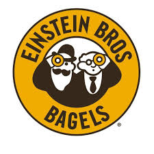

Einstein Bagle
Thank You for choosing Einstein Menu:
Classic Egg Sandwiches
Served with your choice of one egg or two (adds 90 Cal) on a plain bagel
| Fat Calories | 130 |
| Total Fat | 15 g |
| Saturated Fat | 6 g |
| Trans Fat | 0 g |
| Cholesterol | 210 mg |
| Sodium | N/A |
| Potassium | N/A |
| Total Carbohydrates | 57 g |
| Dietary Fiber | 2 g |
| Sugars | 6 g |
| Protein | 22 g |
| Vitamin A | N/A |
| Vitamin C | 0 g |
| Calcium | 250 g |
| Iron | 4.5 g |
Served with your choice of one egg or two (adds 90 Cal) on a plain bagel
| Fat Calories | 140 |
| Total Fat | 15 g |
| Saturated Fat | 7 g |
| Trans Fat | N/A |
| Cholesterol | 225 mg |
| Sodium | N/A |
| Potassium | N/A |
| Total Carbohydrates | 58 g |
| Dietary Fiber | 2 g |
| Sugars | 6 g |
| Protein | 26 g |
| Vitamin A | N/A |
| Vitamin C | 0 g |
| Calcium | 250 g |
| Iron | 5.4 g |
Signature Sandwiches:
Nova Lox, Red Onion, Capers, Tomato with Plain Shmear on a Plan Bagel
| Fat Calories | 150 |
| Total Fat | 17 g |
| Saturated Fat | 9 g |
| Trans Fat | N/A |
| Cholesterol | 50 mg |
| Sodium | N/A |
| Potassium | N/A |
| Total Carbohydrates | 61 g |
| Dietary Fiber | 2 g |
| Sugars | 9 g |
| Protein | 22 g |
| Vitamin A | N/A |
| Vitamin C | 6 g |
| Calcium | 40 g |
| Iron | 3.6 g |
Smashed avocado, Tomato, Red Onion, Spinach, Arugula, Roasted Red Peppers, Cucumber with Garden Veggie Shmear on a Sesame Seed Bagel
| Fat Calories | 110 |
| Total Fat | 12 g |
| Saturated Fat | 4 g |
| Trans Fat | 0 g |
| Cholesterol | 15 mg |
| Sodium | N/A |
| Potassium | N/A |
| Total Carbohydrates | 67 g |
| Dietary Fiber | 5 g |
| Sugars | 10 g |
| Protein | 15 g |
| Vitamin A | N/A |
| Vitamin C | 15 g |
| Calcium | 80 g |
| Iron | 4.5 g |
Roasted Turkey, Lettuce, Tomato, Red Onion, Cheddar Cheese with Mayo & Deli Mustard on a Fresh-Baked Potato Roll
| Fat Calories | 270 |
| Total Fat | 29 g |
| Saturated Fat | 7 g |
| Trans Fat | 0.5 g |
| Cholesterol | 70 mg |
| Sodium | N/A |
| Potassium | N/A |
| Total Carbohydrates | 61 g |
| Dietary Fiber | 3 g |
| Sugars | 12 g |
| Protein | 34 g |
| Vitamin A | N/A |
| Vitamin C | 6 g |
| Calcium | 300 g |
| Iron | 3.6 g |
| Fat Calories | 100 |
| Total Fat | 11 g |
| Saturated Fat | 4.5 g |
| Trans Fat | 0 g |
| Cholesterol | 55 mg |
| Sodium | 950 mg |
| Potassium | N/A |
| Total Carbohydrates | 41 g |
| Dietary Fiber | 3 g |
| Sugars | 6 g |
| Protein | 31 g |
| Vitamin A | N/A |
| Vitamin C | 9 g |
| Calcium | 200 g |
| Iron | 1.44 g |
Sweets
| Fat Calories | 210 |
| Total Fat | 23 g |
| Saturated Fat | 5 g |
| Trans Fat | 0 g |
| Cholesterol | 75 mg |
| Sodium | N/A |
| Potassium | N/A |
| Total Carbohydrates | 55 g |
| Dietary Fiber | 2 g |
| Sugars | 29 g |
| Protein | 5 g |
| Vitamin A | N/A |
| Vitamin C | 0 g |
| Calcium | 60 g |
| Iron | 1.08 g |
| Fat Calories | 240 |
| Total Fat | 27 g |
| Saturated Fat | 7 g |
| Trans Fat | 0 g |
| Cholesterol | 75 mg |
| Sodium | N/A |
| Potassium | N/A |
| Total Carbohydrates | 69 g |
| Dietary Fiber | 1 g |
| Sugars | 46 g |
| Protein | 5 g |
| Vitamin A | N/A |
| Vitamin C | 0 g |
| Calcium | 100 g |
| Iron | 2.7 g |
| Fat Calories | N/A |
| Total Fat | N/A |
| Saturated Fat | N/A |
| Trans Fat | N/A |
| Cholesterol | N/A |
| Sodium | N/A |
| Potassium | N/A |
| Total Carbohydrates | N/A |
| Dietary Fiber | N/A |
| Sugars | N/A |
| Protein | N/A |
| Vitamin A | N/A |
| Vitamin C | N/A |
| Calcium | N/A |
| Iron | N/A |
Please click on the following links
to go back another menu page on Campus